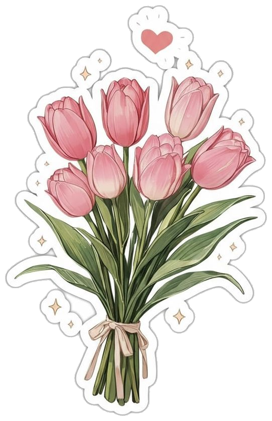
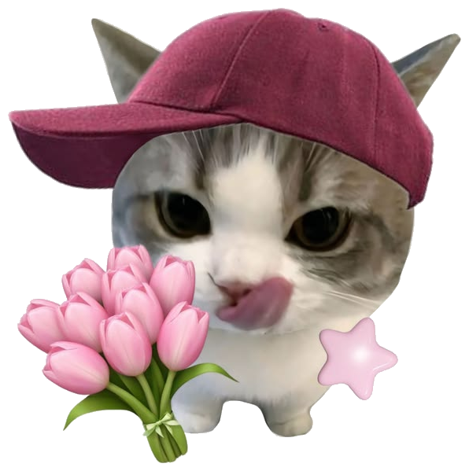
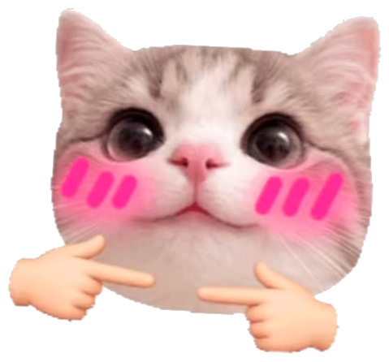
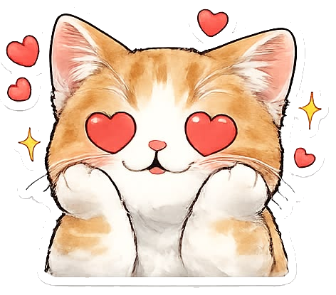

one song for this page ♫
Arz Kiya Hai
Anuv Jain


psst... secret birthday corner
Only one person gets to open it 🎀
after wandering around across all the gifts i came to this please open this cute gift from my side

for my favourite person ♡

♪ ♡ ♫one song for this page ♫
Anuv Jain
things that make zero sense to everyone else
Humari jodi dekh ke to kayi log kale pad gye
certified evidencebas kitne padhe gi kux khud se bhi yaad kar le itna time nhi h mere pe ki tere uper lagaunga
academic support department™some things deserve a whole page
Aaj tera birthday hei to socha kux teri aur meri purai yaadein taaza kar lu, bas meri battion ko padhiyo mat unhe remind kariyo. yaad h apni class 10th ka time jab daksh mere sath ladai karta tha but still mere pas tera support tha bhai vo bhi kya din the remember kaise me tere liye chiji lata tha ha vo baat alag aadhe paise hemant ke bhi lagte the but still yaar apne jab boards khatam hue the tab hum kitne kush the bhai yaar yaad ho to apna snap pe group bhi tha i just fucking remember those days yaar uske baad kya phasi thi tu vo to shi tune ek itna accha friend bana rakha tha nhi to kaha milte h aise lag aaj kal duniya me aur tera kand hone se pehle yaad h tu mere se class me hupp!!! bolne par naraj ho gyi thi oo bhai vo din to jindgi me kabhi bhula nhi paunga bhaisaabh me to pagal ho liya tha tujhe manane me aur ab garmi ki chuttiyon se pehle kya fielding set karvai thi sabhi ki mujhe to abhi bhi samaj nhi ye ladkiya tujhe bol kaise deti h but stilll pata nhi garmiyo ki chuttiyon me kiske under me padhke ayi thi puri change yaar par aache dost vo thodi hote h jo badalte nhi balki vo dono badalte h but stilll ek dusre ko choose karte h and you still choose me and now for your pretteist birthday i am making this..... ab mera to tere sath garba khelne ka plan tha par ye school vale never mind bas jab tak tu h mere sath mere liye to har din garba h ab aur kux h to nhi mere pas kehene ko raat bhi bhot ho gyi chal ab tujhe kux kehena h to niche vale section me plzz remind kariyo and the only last thing i'll say that this isnt an end this is an beginning of memories we create and i hope we create more....... Once again an happiest birthday to you, to my one and only closest friend ever been CHHIKKKKKKKKKKKKKKKUUUUUUUUUUUU............
okay fine... photo time 📸
Itna excited kya ho rhi h photoes dekhne ke liye mene bus me mangi thi jab tune di.....

memory #01

memory #02

memory #03
scratch the paper coating with your finger or mouse ✨
hmm... searching for something?
Madam ji what are you looking for I had already given it to you remember....
Wait... you really thought that was everything? 👀
a tiny list that very quickly became not tiny
Your thoughts.
Your kindness.
Your scolding.
Your love toward me.
Your cuteness.
Your hands.
yeah... we're skipping a few 😭
Ohhh... you still haven't found it? 👀
Look a little closer. 👀
a very important friendship question...
YESSS, I KNEW IT! 😭🎀
♡one last page...
some memories stay glowing, even when the page is closed.
for my only and dear friend
— made with too many tiny details ♡
one last little page
Before you go... you can leave a little note here for me.
Your note has been tucked away safely ♡